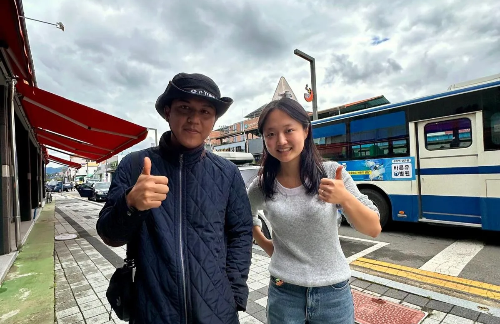
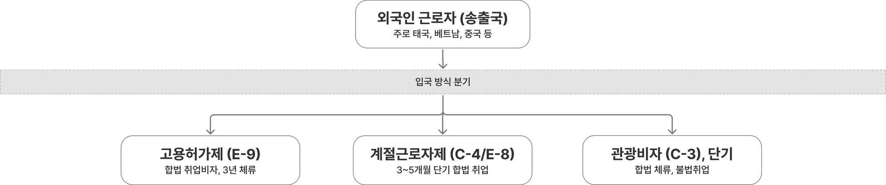
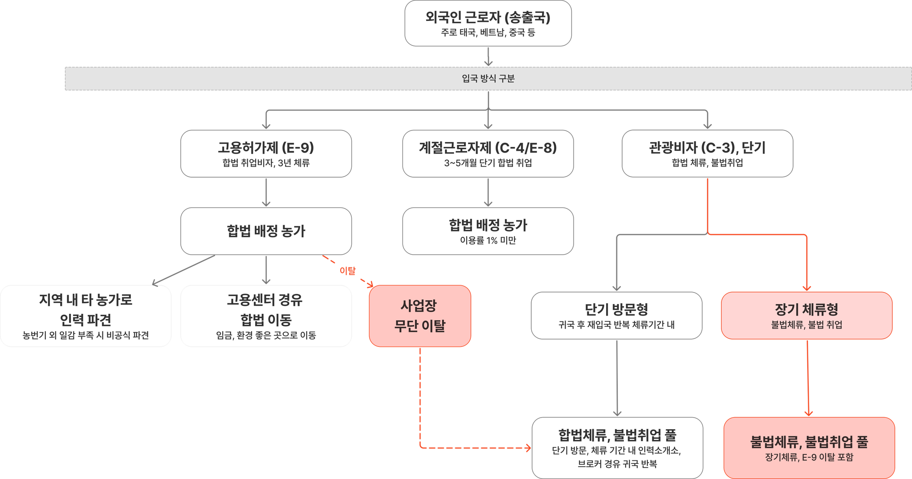
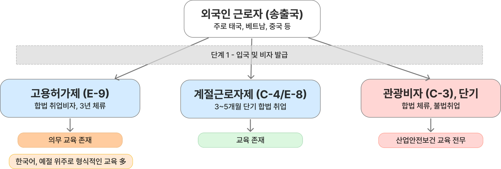
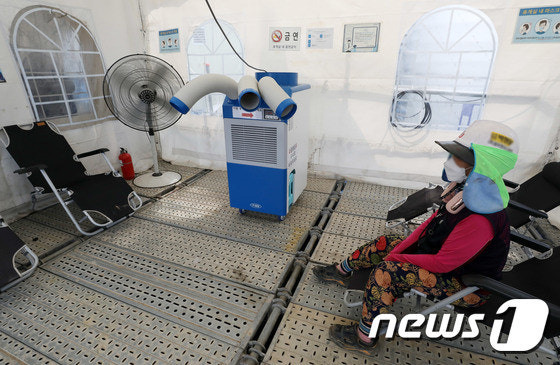
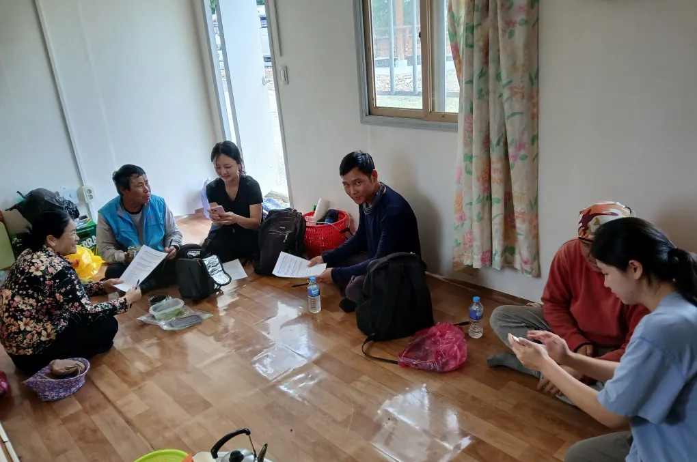
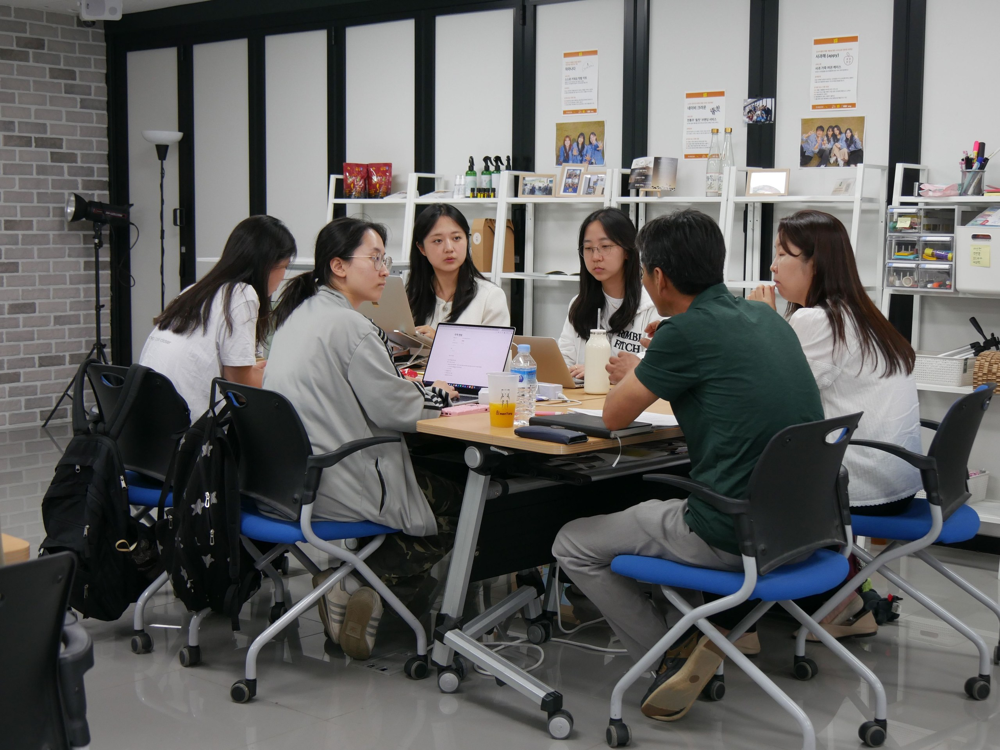
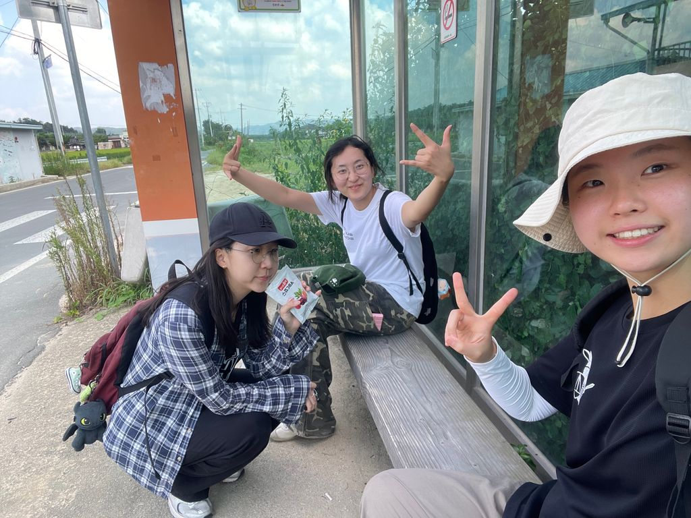
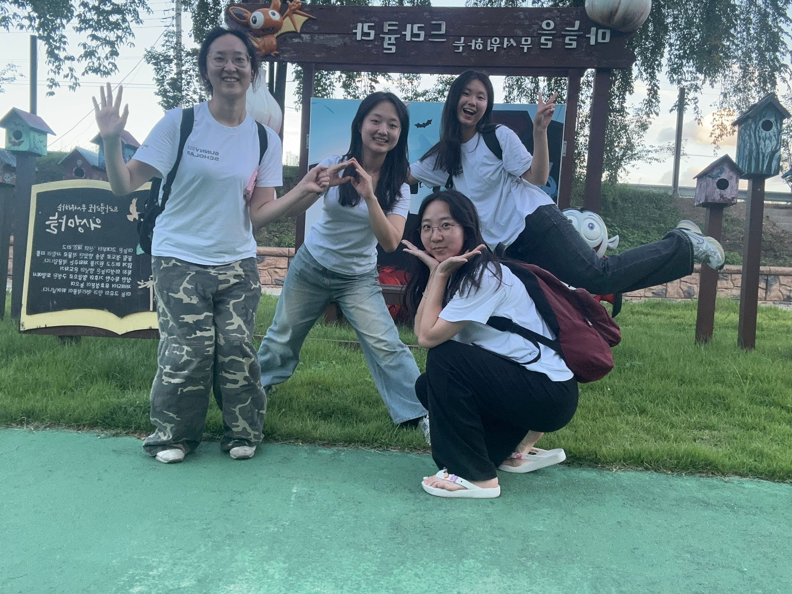

2025년 7월, 그늘조차 없는 노지였다.
장시간 일하던 태국 출신의 60대 노동자 A씨가 열성 쇼크로 쓰러졌다. 응급실로 이송된 그는 언어 기능에 심각한 후유증을 얻었다. 그러나 이 사건은 정부의 온열질환 통계에 집계되지 않았다.
오직 헷-사과 팀이 현장에서 직접 만난 이주노동자단체의 증언과 극소수의 기사를 통해서만 들을 수 있었던 '공론화되지 않은 사고'였다. 이주노동자들의 고통은 '죽음'에 이르러서야 비로소 언론에 짧게 다뤄질 뿐, 철저히 소외되어 있다.
밭 한가운데, 단 한 그루 나무 그늘에 몸을 기댄 이주노동자들. 휴식 공간은 따로 없었다.
"폭염 야외작업 50대 이주노동자 사망···온열질환 의심"
언론 보도 1
"폭염 속 이주노동자 3주 동안 3명 숨졌다"
언론 보도 2
"첫 출근날…폭염에 '체온 40도' 앉아서 숨진 23살 야외노동자"
언론 보도 3
살인적인 더위 아래, 이주노동자들은 속수무책이다.
갈수록 뜨거워지는 여름, 폭염은 이제 재난이 되었다. 기상청에 따르면 근 10년간의 폭염일수는 꾸준히 증가하고 있으며, 평균 최저기온 역시 상승을 거듭한다. 2026년은 5월부터 이례적인 더위가 시작된 탓에, 역대 연중 가장 이른 시점에 온열질환 사망자가 발생하기도 했다.
출처: 질병관리청 온열질환 응급실 감시체계
한국 농촌은 이미 이주노동자에게 기대고 있다
0%외국인 고용 농가
외국인을 고용하는 농가가 64.3%. 한국 농촌의 이주노동자 의존율은 이미 60%를 웃돈다. 더 이상 예외적인 인력이 아니라, 농사를 떠받치는 일손이다.
출처: 뉴스에듀
1부 · 헷-사과 팀이 본 현장
통계에 없는 사고를 찾아, 밭으로 갔다
데스크리서치만으로는 문헌연구도 통계 수치도 전무했다. 이주노동자가 사망해도 부검 시 작업 환경·노동 강도·폭염 노출 시간 등이 사인 판정에 충분히 반영되지 않아, 온열질환 통계에조차 집계되지 않기 때문이다. 그래서 헷-사과 팀은 경북 의성을 비롯한 농촌 현장으로 직접 향했다.
조사 시기
2025. 8. 30 ~ 2025. 9. 15
조사 대상
이주노동자 31명, 관계자 15명
조사 지역
의성군 의성읍·점곡면·옥산면, 안동시 등
조사 내용
질환 경험 실태, 작업 환경, 휴식·그늘 유무, 안전 안내 경험, 체류 자격, 인식
의성의 한 사과밭에서 진행한 현장 인터뷰. 이주노동자 31명, 관계자 15명을 직접 만났다.
조사 결과 — 31명 중 13명이 온열질환을 겪고 있었다
0%31명 중 13명
설문조사 결과(n=31), 31명 중 13명이 온열질환을 경험했다. 셋 중 하나 이상이 더위에 몸이 무너지는 순간을 이미 겪었다. 체감온도 40도를 넘는 날, 휴식 공간도 그늘도 없이, 가장 더운 오후 1시경에도 작업은 계속됐다.
"일하던 중 얼굴이 창백해지고 몸이 덜덜 떨렸어요. 순간 정신을 잃지 않으려고 마시던 냉수를 머리에 들이부으면서 버텼습니다."
라오스 출신 가지밭 노동자 C씨
"머리는 너무 어지럽고 눈앞이 흐린데 어떻게 해야 할지 모르겠어서 큰 수를 쓸 수 없었습니다."
"복장이나 더위 대응까지 안내하는 건 현실적으로 잘 안 돼요. 기본 안내 항목에도 안 들어갑니다."
🧑🏼💼 인력업체 · 의성군 A업체
"어느 현장으로 갈지도 매일 바뀌는데, 안전교육까지 하기 어려운 구조예요."
🧑🏼💼 인력 관리자 · 안동시 B업체
→ 안전 교육은 늘 후순위였고, 폭염은 '어쩔 수 없는 환경'으로 받아들여졌다.
"작업 도중에 더워서 어지러웠던 적이 많아요. 그런데 병원에 간다거나 하루치 일을 빼는 건 불가능해요."
👷🏼 이주노동자 · 인도네시아 20대 남성
"더워도 그냥 참고 일했어요. 쉬자고 먼저 말할 수 없거든요."
👷🏼 이주노동자 · 네팔 30대 남성
"중간에 쉬면 끝나는 시간이 늦어져서 더 힘들어요. 집이 머니까요."
👷🏼 이주노동자 · 베트남 30대 여성
→ 신분·고용 관계상 취약함 때문에, 작업 중단이나 휴식 요구는 애초에 불가능했다.
"폭염이 심한 대낮에 영농 활동을 자제하라고 당부합니다. 드론 띄워서 농민들을 안전한 곳으로 대피시키기도 해요. 하지만 이주노동자들에게는 이런 조치가 가닿기 어려워요. 농가와 사적으로 맺은 계약 관계여서 행정 기관의 현장 개입에 한계가 있습니다. 저희 입장에서는 해드릴 수 있는 게 없습니다."
🏛️ 농촌 지자체 관계자
→ 지자체조차 개입할 수 없는 거대한 사각지대.

왼쪽: 폭염 속에도 멈추지 않는 출하 작업. 오른쪽: 읍내에서 만난 농부와 함께.
2부 · 왜 그럴까 — 원인 분석
개인의 부주의가 아니라, 들어오는 길부터 어긋나 있었다
2.1. 이주노동자 유입 경로의 특수성
농촌으로 들어오는 길은 비자와 체류 자격에 따라 셋으로 갈린다. 그런데 합법과 불법의 경계는 현장에서 쉽게 무너진다.
고용허가제 (E-9)3년 체류 가능한 합법 취업비자
계절근로자제 (C-4 / E-8)3~5개월 단기 합법 취업
관광비자 (C-3)체류는 합법이지만 취업은 불법

송출국에서 출발해 입국 방식에 따라 E-9·C-4/E-8·C-3로 갈리는 유입 경로
합법으로 들어와도 경계는 쉽게 무너진다. 고용허가제(E-9)로 들어온 뒤 무단 이탈해 불법 사업장으로 옮기면 '합법체류·불법취업'이 되고, 3년 후 미귀국하면 '불법체류·불법취업'이 된다. 관광비자(C-3)는 체류기간 내 노동만으로도 이미 불법취업이며, 기한을 넘기면 '불법체류·불법취업'이 된다.

합법으로 시작해도 무단 이탈·미귀국·기한 초과로 불법 취업·체류로 흘러가는 경로
현장에서 만난 이주노동자 유입경로
사례
비자 / 체류
특징
인도네시아 20대 남성 3명
관광비자 단기 입국
고향친구 소개로 입국
베트남 남성 10여 명
고용허가제 장기 → 불법체류
농가체류형 숙소
캄보디아 여성 15여 명
계절근로자제 단기 입국
—
베트남 30대 남성 10여 명
관광비자 단기 입국
—
맹점이 누적되며, 거대한 '불법 체류·불법 취업 풀'이 고착화됐다.
0%
농촌 이주노동자 중 공식 체류 자격 없는 '미등록'
0%
채소·과수 작물재배 농가가 미등록 노동자에 의지
0%
축산농가가 미등록 노동자에 의지
0%
불법 취업 규모 전년 대비 폭증
0
불법 취업 규모 전체
출처: 한국농촌경제연구원
2.2. 미등록 신분이 낳은 거대한 제도적 사각지대
서류조차 없는 '그림자 노동자'들의 침묵근로계약서가 없고, 신분 노출·해고가 두려워 고통을 숨긴다.
통계에 잡히지 않는 '유령' 같은 죽음단속·강제출국이 두려워 응급실을 기피하고, 사망조차 단순 지병으로 축소된다.
의료 사각지대와 책임 전가건강보험에서 배제돼 치료비를 개인이 부담한다. 한 베트남 노동자는 농장주의 치료비 자부담 요구로 중도 귀국했고, 현지 보험사도 '해외 노동 중 발생'을 이유로 거절했다.
2.3. 안전교육 현황 및 실태
관광비자(C-3)는 취업 자체가 불법이라 산업안전보건 교육 시스템과 연결될 여지가 없다. 교육이 존재할 수 없는 처지다. 고용허가제(E-9)는 입국 전 45시간, 입국 직후 2박3일(16시간)의 의무 교육이 있지만, 현장에서는 다르게 굴러갔다.

비자 유형별 안전교육의 제도적 규정 — E-9만 의무 교육이 존재하고, 그마저 형식적이다.
교육 단계
제도적 규정
현장 실태
입국 전 (송출국)
45시간↑ — 기초 한국어·문화·산업안전 기초
현장 실무 용어와 괴리가 커 소통 불가, 형식적 이수
입국 직후 (공동취업교육)
16시간↑(2박3일) — 산업안전보건·근로기준법·노동권리
무단 이탈 방지 경고성 내용에 편중, 폭염 실무 수칙 미흡
교육의 목적이 노동자 보호가 아니라 이탈 통제에 맞춰져 있었다.
0%안내 못 받음
63%가 온열질환 관련 안내를 받지 못했다. 더위를 피하는 가장 기본적인 정보조차 닿지 않았다.
"말이 잘 통하지 않으니 작업 방법 정도만 몸으로 보여주는 수준이에요. 10분 따라 하면 끝, 안전 교육은 따로 제공하지 않습니다."
의성군 옥산면 김정미 사과농부
현장 안전교육을 막아서는 세 가지 장벽
당일 투입 인력의 극심한 불확실성 — 국적조차 예측할 수 없어 맞춤 교육이 불가능하다
시간이 곧 생산성 손실인 단기 고용 — 교육에 쓸 시간이 없다
기본적인 소통조차 막아서는 언어의 차이
2.4. 건설업과의 비교 — 같은 폭염, 다른 보호
같은 야외 노동이지만, 건설업과 농촌이 받는 보호는 전혀 달랐다. 한쪽은 법적 의무, 다른 한쪽은 권고에 머문다.
항목
🏗️ 건설업
🧑🌾 농촌
법적 근거
산업안전보건기준 개정(2025.7.17 시행) — 법적 의무
2025 여름철 자연재난종합대책 — 권고 수준
안전지침
온·습도계 기록, 자율점검표, 불시 점검·교육, 위반 시 처벌
예방 가이드·자율점검표 배포, 5인 미만 영세농가 적용 제외
휴게 공간
냉방·환기 그늘막 / 별도 휴게공간 설치 의무화
나무 그늘 등 간이 휴식에 의존

왼쪽: 건설현장에 설치된 냉방·환기 휴게공간. 오른쪽: 농촌에선 나무 그늘 한 그루가 휴식의 전부다.
농업은 작물 생육주기와 날씨에 종속돼 폭염 속에서도 작업을 강행한다. 법적 강제성이 없고, 5인 미만 영세농가는 제외된다.
3부 · 최종 문제정의
사전 예방·현장 대응·사후 관리가 모두 비어 있었다
농촌 이주노동자는 사전 예방, 현장 대응, 사후 관리에 이르는 공백 때문에, 폭염이라는 기후 위기 앞에 최소한의 안전망도 없이 방치되는 '다중적 사각지대'에 놓여 있다.
농가체류형 숙소에서 만난 이주노동자들. 사전 예방부터 사후 관리까지, 어느 단계도 그들을 받치지 못했다.
그렇다면 지금 당장 현장에 쥐여줄 수 있는 가장 시급하고 현실적인 방패는 무엇일까. 헷-사과 팀은 '복장 표준'에서 답을 찾았다. 명확한 복장 기준이 없어, 잘못된 복장 선택이 온열질환 위험을 더 키우고 있었기 때문이다.
4부 · 헷-사과의 솔루션
온열질환 안심키트
폭염 속 농업 현장에 필요한 생존 장비의 표준을 만들다.
솔루션이 하나의 '표준'으로 정립되기 위해 세 가지 조건을 세웠다.
기능성실제 폭염 현장에서 몸을 지킬 수 있는가
접근성언어·비용 장벽 없이 누구나 받아 쓸 수 있는가
직관성설명 없이도 바로 쓰는 법을 알 수 있는가
헷-사과 팀이 설계한 '온열질환 안심키트' — 사전 예방형 생존 장비 세트
구성 ① · 키트 구성품
생명과 직결되는 4가지 필수 보호물품
사전 예방형 생존 장비
"내 몸의 개인 에어컨", "햇님 철벽 방어 세트".
폭염 현장에서 체온을 직접 떨어뜨리고 햇볕을 막는 보호용품으로 구성했다. 별도의 시설 없이도, 몸에 바로 두를 수 있는 휴대형 방패다.
구성 ② · 다국어 리플렛
총 10개 언어 제작
정보 접근성
언어가 다르다는 이유로, 살아남는 법을 모르지 않도록.
올바른 사용법과 예방 지식을 10개 언어로 담았다. 언어 장벽으로 인한 정보 접근성 차이를 최소화하기 위해서다.
온열질환 예방 지식을 담은 10개 언어 리플렛
현장에서 직접 키트와 리플렛을 전달하고 사용법을 함께 확인했다.

키트를 받아 든 이주노동자들. 작은 장비 하나가 더위 속 하루를 바꾼다.
안심키트의 의의
농촌 현장의 '폭염 대비 표준'을 처음으로 제시
건설업에는 있어도 농촌에는 없던 '기본 안전 기준'을, 농촌 버전으로 처음 만들었다.
사전 예방 중심의 농촌 안전문화 정착
사고가 난 뒤 대응하는 방식에서, 미리 막는 방식으로 무게중심을 옮긴다.
데이터 공백 속에서 '가시성' 확보
통계에 잡히지 않던 문제의 존재를, 눈에 보이는 형태로 드러낸 첫 공식 시도다.
5부 · 문제의 확장
임팩트 캔버스로 보는 변화
키트 하나로 끝나는 일이 아니다. 헷-사과 팀이 그린 변화의 흐름은 네 단계로 이어진다.
수면 위로 떠오른 목소리들
다중적 사각지대를 조명한다 — 보이지 않던 고통을 드러낸다.
공론화로 선명해지는 현실
문제의 해상도를 고도화한다 — 막연한 문제가 또렷한 의제가 된다.
경계를 넘어선 확장과 연대
사회적 책임을 발견한다 — 농가·지자체·기관이 함께 묶인다.
지속 가능한 변화를 위한 초석
시스템 개선의 기반을 구축한다 — 일회성 지원을 넘어 제도로 이어간다.
→ 헷-사과 팀은 이 흐름을 지속 가능한 해결로 잇기 위한 네 가지 관점을 함께 제시했다.

문제 당사자부터 고용 농장주·지원기관·인력업체·의성군청까지, 다양한 주체와 마주 앉았다.
6부 · 연구 여정의 마무리
팔, 다리가 잘려야만 뉴스에 나오는 사람들
2025년 6월부터 11월까지, SK 행복나눔재단 「Sunny Scholar in 의성」 프로젝트로 네 명의 대학생이 헷-사과 팀으로 모였다. 문제 당사자와 동료, 고용 농장주, 이주민 지원 기관·센터, 인력업체, 의성군청까지 다양한 이해관계자를 만났다.
"이주노동자 문제는 팔, 다리가 잘려야만 뉴스에 나와요."
경북북부이주노동자센터 소장

의성 곳곳을 걸어 다니며 현장을 찾은 헷-사과 팀
죽음에 이르러서야 짧게 다뤄지는 고통을, 죽음 이전에 멈출 수 있도록.
온열질환을 '어쩔 수 없는 더위' 탓으로만 기록하지 않기 위해. 헷-사과는 이 문제를 개인의 운이 아닌, 함께 바꿔야 할 안전 문제로 다시 봅니다.

헷-사과 — 의성에서 한 여름을 보낸 네 명의 대학생 연구팀
함께 바꿀 수 있습니다
키트 보급 협력 · 지자체/복지기관 연계 · 다국어 안전정보 표준화 · 연구 보고서 — 모든 문의를 받습니다.